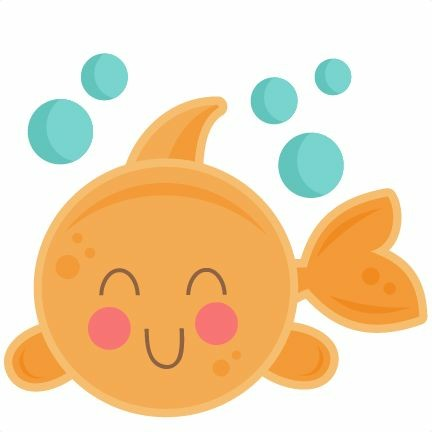

Escolha um grupo de animais e tente adivinhar quais são. Não se esqueça de ler as dicas!
Aves

Peixes
Mamíferos
Anfíbios
Répteis
Um levantamento realizado pelo WWF mostra que, nos últimos 50 anos, 20% da Amazônia desapareceu do
mapa. Muito disso se deve ao desmatamento desenfreado motivado pelos pecuaristas, para a criação de pastos.
Outro motivo é a indústria da carne. O levantamento ainda mostra que, nos últimos 30 anos, a Terra perdeu 50% de
seus recifes de corais e 75% dos animais que correm risco de extinção estão ameaçados por causa da agricultura,
da exploração em excesso, e da caça ilegal. Este é um trabalho feito para conscientizar as crianças de como é
importante a preservação do meio ambiente. “Se não mudarmos, em pouco tempo não teremos mais animais.”